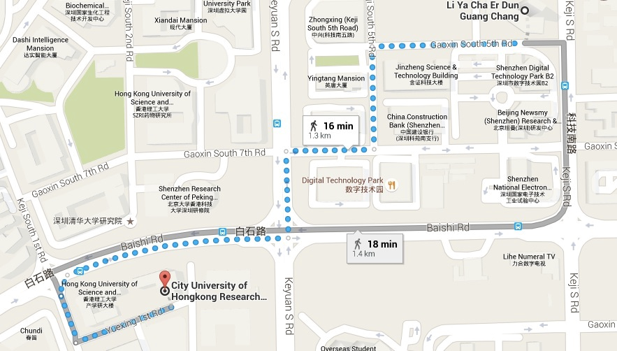
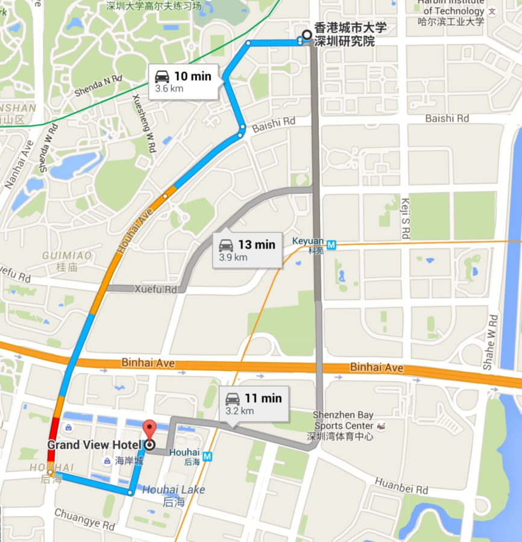
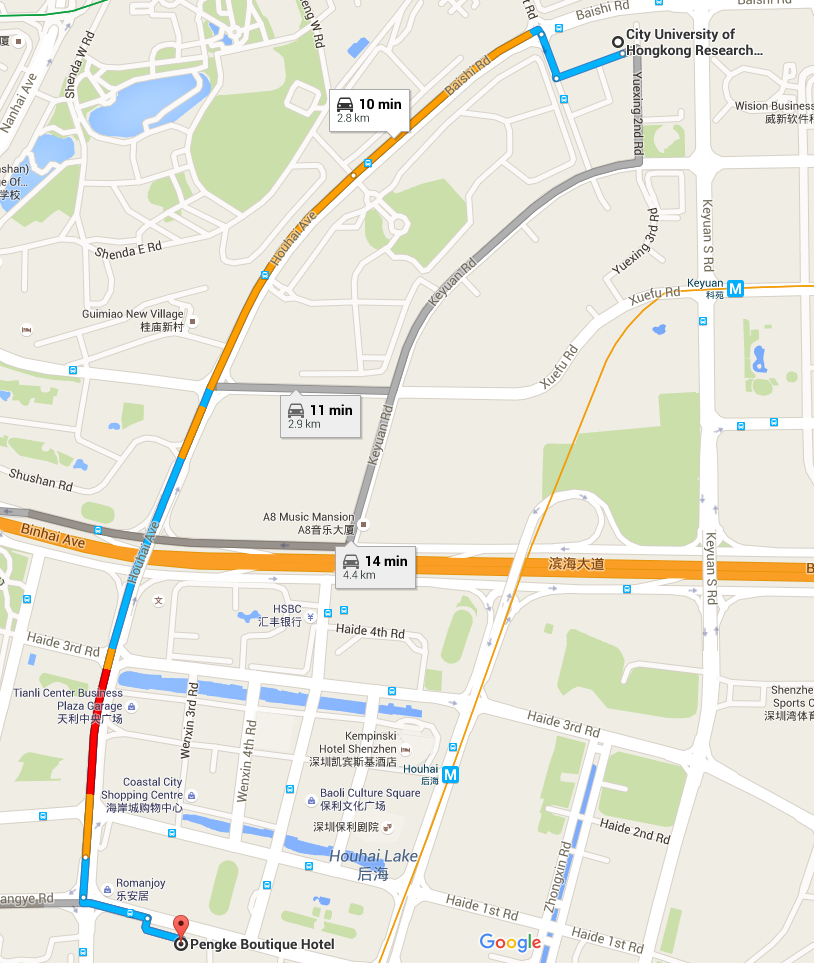
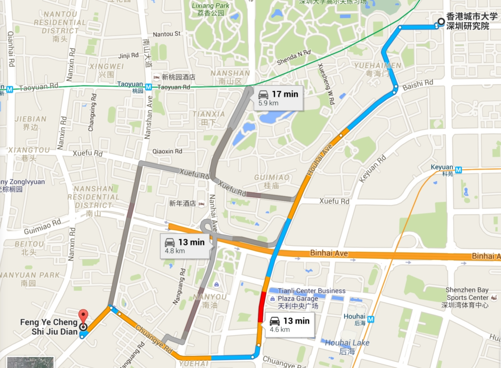

Guide
Address:
City University Shenzhen Research Institute, No.8, Yuexing 1st road, Nanshan district, Shenzhen.Zip Code:
518057Tips for visitors:
1. From Hong Kong:
Through Shenzhen Bay Port(1) Taking a taxi directly to the CityU Shenzhen Research building (about 10 minutes)
(2) Taking the Airport line 8 to Yuehaimen bus station (about 20 minutes), walking to the building (about 1 minute)
Through Luohu Port
(1) Taking a taxi to the CityU Shenzhen research building (about 30 minutes)
(2) Taking the metro from Luohu station to Shenda station (about 40 minutes) by Luobao line, Exit C, and walking to the building (about 10 minutes)
Through Futian Port
(1) Taking a taxi to the CityU Shenzhen research building (about 25 minutes)
(2) Taking the metre to Shimin metro station by Longhua line, and transferring to Shenda station by Luobao line (about 35 minutes), and walking to the building (about 10 minutes)
Through Huanggang port
Taking a taxi to the CityU Shenzhen research building (about 20 minutes)
2. From Baoan international airport
(1) Taking a taxi from the Airport to the CityU Shenzhen Research building (about 35 minutes)(2) Taking the Airport line 8 to Yuehaimen bus station (about 45 hour), walking to the building (about 1 minute)
(3) Taking the Airport line 10 to Gushu bus station, then taking the metro from Gushu metro station to Shenda station (about one hour and a half) by Luobao line, Exit C, and walking to the building (about 10 minutes)
3. From railway station
North station(1) Taking a taxi to the CityU Shenzhen Research Building (about 40 minutes)
(2) Taking the metro from Shenzhen north metro station to Shimin centre station by longhua line, and then transferring to Luobao line to Shenda station (about one hour and a half), Exit C, and walking to the building (about 10 minutes)
West station
(1) Taking a taxi to the CityU Shenzhen research institute building (about 20 minutes)
(2) Taking the bus 682 to Yuehaimen bus station (about 40 minutes), walking to the building (about 1 minutes)
East station
(1) Taking a taxi to the CityU Shenzhen Research building (about 40 minutes)
(2) Taking the metro to Huangbeiling station by Huanzhong line and then transferring to Keyuan metro station by Shekou line (about one and half hours), Exist D, and walking to the building (about 8 minutes)

丽雅查尔顿酒店(Lia Charlton Hotel)
Address:
13 Gaoxin South 4th Road (Gaoxin Nan Si Dao), Hi-tech Park, Nanshan District 1.3 km from the City University of Hong Kong Shenzhen Research Institute
Price:
800 RMB (Including breakfast. Subject to 15% service charge)

凯宾斯基酒店(Kempinski Hotel)
Address:
Intersection of 3rd Haide Way (Haide San Dao) & Houhaibin Road (Houhaibin Lu), Nanshan District 2.5 km from the City University of Hong Kong Shenzhen Research Institute
Price:
868 RMB (Including breakfast. Subject to 15% service charge)

博林诺富特酒店(Novotel Bauhinia Shenzhen)
Address:
2002 East Qiaocheng Road (Qiaocheng Dong Lu), Huaqiao Town, Futian District 6.5 km from the City University of Hong Kong, Shenzhen Research Institute.
Price:
689 RMB (Including service charge and breakfast)

新桃园酒店(Grand View Hotel)
Address:
East Villa, Haiancheng Mansion, 5th Wenxin Road (Wenxin Wu Lu), Nanshan District 2.5 km from the City University of Hong Kong, Shenzhen Research Institute
Price:
530 RMB (Including service charge and breakfast)

蓬克精品酒店(Pengke Boutique Hotel)
Address:
Intersection of Wenxin 5th Road and Chuangye Road, Nanshan District, Shenzhen, China 2.8 km from the City University of Hong Kong Shenzhen Research Institute
Price:
466 RMB (Including service charge and breakfast)

枫叶酒店(Maple Leaf City Hotel)
Address:
1039 Nanshan Avenue (Nanshan Dadao), Nanshan District, near Haiancheng Mansion 2.5 km from the City University of Hong Kong, Shenzhen Research Institute
Price:
250 RMB (Including service charge and breakfast)
